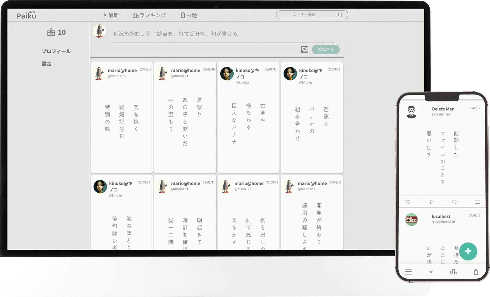

HELLO!
I am Akihito,
studying to become a
Backend engineer.
Skills
フロントエンド&
バックエンドエンジニアリング
- WEBサイトのコーディング
- CRUD操作
- APIの作成
- DBの設計、操作
使用言語、開発環境
フレームワーク
- JavaScript / Node.js / Express
- TypeScript
- Python / Flask
- MongoDB / MySQL
- HTML / CSS
- Webpack
- Docker
- GCP/Cloud Storage / Cloud Run
Portfolio
俳句、川柳、575が投稿できるSNS Webアプリケーション
Node.jsとExpressで、メインのアプリケーションを開発しました。データベースにMongoDB、ストレージにGCPのCloud Storageを使用、gcloudでコンテナをビルドしGCPのCloud Runにデプロイ。
